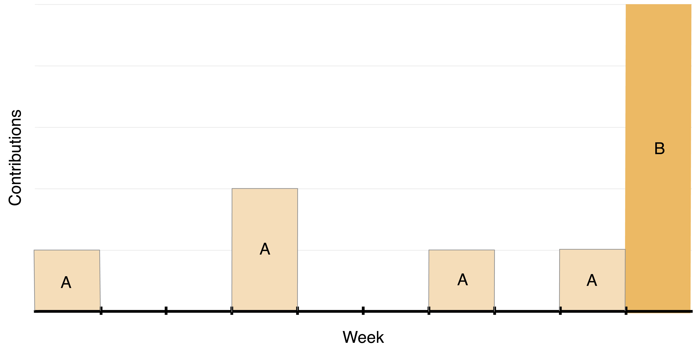
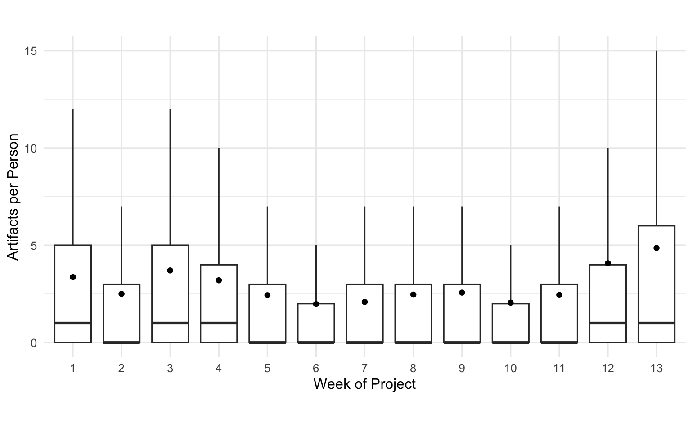
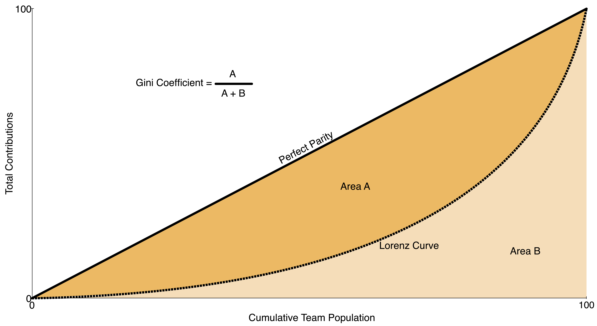
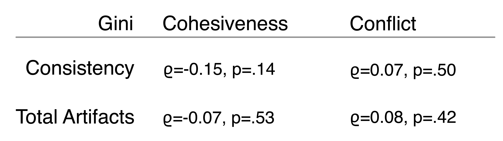
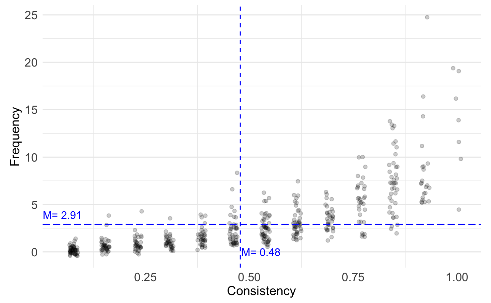

[comment]: # (Compile this presentation with the command below) [comment]: # (mdslides index.md && mv index/index.html .) [comment]: # (The list of themes is at https://revealjs.com/themes/) [comment]: # (The list of code themes is at https://highlightjs.org/) [comment]: # (Pass optional settings to reveal.js:) [comment]: # (markdown: { smartypants: true }) [comment]: # (Other settings are documented at https://revealjs.com/config/) #### Chronicling Consistency and Parity of Contributions to Software Engineering Team Projects ---------- Kevin Buffardi, Rahul Bijoor, Aviral Kumar Srivastava, Tamanjeet Kaur Sidhu, Shalavritha Mamunooru, Aditi More <img src="qr-chronicling.svg" alt="QR code for this presentation" width="30%"> </img> <sub>[LearnByFailure.com](https://learnbyfailure.com/chronicling/)</sub>
#### Software Engineering Education - Team projects provide experiential learning
#### Software Engineering Education - Team projects provide experiential learning - Agile software development principles
#### Software Engineering Education - Team projects provide experiential learning - Agile software development principles - <u>M</u>inimum <u>V</u>iable <u>P</u>roduct
#### Software Engineering Education - Team projects provide experiential learning - Agile software development principles - <u>M</u>inimum <u>V</u>iable <u>P</u>roduct - Incremental delivery-and-discovery (Scrum sprint)
#### Software Engineering Education - Team projects provide experiential learning - Agile software development principles - <u>M</u>inimum <u>V</u>iable <u>P</u>roduct - Incremental delivery-and-discovery (Scrum sprint) - Contributing in a team
### How to fairly and accurately evaluate individuals in a team?
#### Common Approaches to Evaluating Individuals - Team Grades - Peer/Self Evaluations - Data Mining for Contribution Quantity
#### Unintended Outcomes **Team Grades**
#### Unintended Outcomes **Team Grades** - Social loafing, responsibility hoarding
#### Unintended Outcomes **Peer/Self Evaluation**
#### Unintended Outcomes **Peer/Self Evaluation** - Collusion, personal biases
#### Unintended Outcomes **Data Mining for Contribution Quantity**
#### Unintended Outcomes **Data Mining for Contribution Quantity** - Sacrificing quality for quantity - Procrastinating
#### What about... - Inactive or "lone wolf" members - Should contribute iteratively - Looking for "Signs of life"
#### Investigating Contribution Consistency
#### Consistency  </img>
#### Consistency Data mined team repositories (via GitHub API) - Counted artifacts: - Issue creation - Commits - Pull Requests - Code Reviews - Comments
#### Consistency 10 semesters of upper-division Software Engineering - 94 teams - 19,095 artifacts - 465 unique students
#### Consistency  </img>
#### (dis?) Parity Gini Index - Originally a measurement of economic inequality - Can be used to compare contributions within team - (maximum parity) 0 to 1 (maximum disparity)
#### (dis?) Parity Gini Index  </img>
#### Investigating Contribution Consistency **RQ1** Is team parity of <u>total contributions</u> and/or <u>consistency of contributions</u> associated with team cohesiveness or lack of conflict?
#### Team Affect End of semester CATME surveys - Cohesiveness (M=3.79, sd=0.4) - Conflict (M=1.5, sd=0.37)
#### Team Affect Consistency (% weeks with 1+ contribution) - M=0.48, sd=0.26 - Team Gini: M=0.32, sd=0.12 Total Artifacts - M=37.78, sd=42.25 - Team Gini: M=0.51, sd=0.17
#### Team Affect Spearman ρ Correlations  </img>
#### Does consistency tell us anything?
#### Consistency **RQ2** What unique insights may contribution consistency provide about teamwork that are not already revealed by other metrics?
#### Consistency  </img>
#### Consistency - 12% (n=55) students contributed only during a single week of the semester - *Not* only students who contributed at the very end (n=15, 27%) - Maybe teams have different internal cultures - Rhythm of sharing contributions
#### Consistency Investigating each team's median student `Cohesiveness ~ Median_Artifacts + Median_Consistency + Gini_Artifacts + Gini_Consistency`
#### Chronicling Consistency and Parity of Contributions to Software Engineering Team Projects <small>This presentation is accessible at [learnbyfailure.com/chronicling/](https://learnbyfailure.com/chronicling/) and its source is available on [GitHub](https://github.com/kbuffardi/chronicling/).</small> <img src="qr-chronicling.svg" alt="QR code for this presentation" width="30%"> </img> <small>[Back to LearnByFailure](https://learnbyfailure.com/research/) </small>